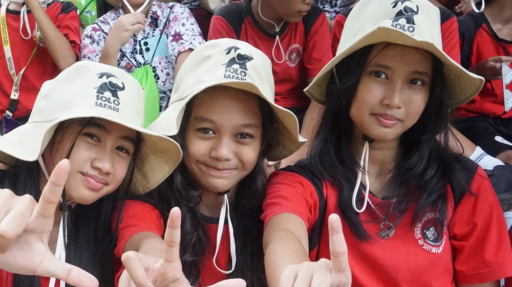
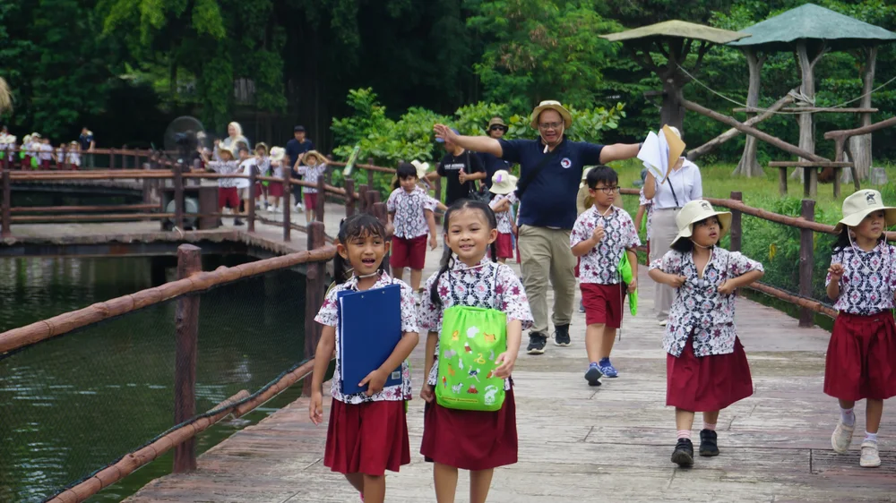

Sebagai wujud nyata implementasi pembelajaran mendalam (Deep Learning), siswa-siswi SD Kristen Satya Wacana (SD Lab UKSW) Salatiga mengikuti kegiatan belajar luar kelas (Outdoor Learning) ke Solo Safari Surakarta.

Kegiatan ini dirancang untuk memberikan pengalaman belajar nyata (Meaningful Experience) yang menghubungkan materi sains di kelas dengan dunia satwa secara langsung. Anak-anak berinteraksi dan mengamati perilaku berbagai satwa endemik Indonesia maupun mancanegara.

Melalui bimbingan para guru dan pemandu edukasi, para siswa diajak memahami pentingnya konservasi alam, rantai makanan, perlindungan satwa langka, serta menjaga kelestarian lingkungan hidup sebagai tanggung jawab bersama.